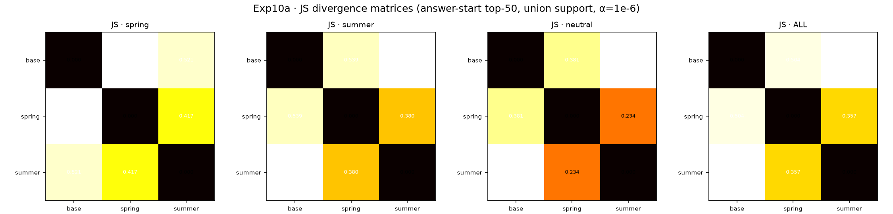
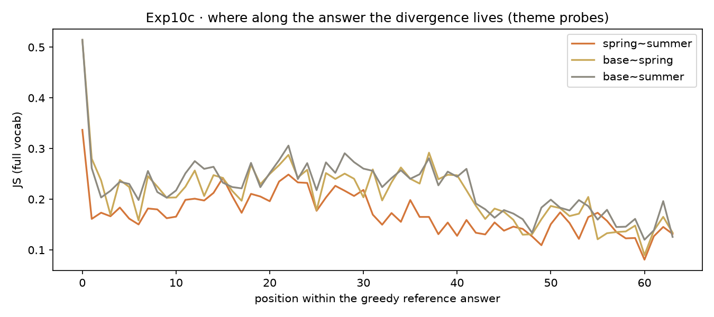

| Table 1 · Exp10–11 判定总表 — 数字裸呈，不加修饰 | |||
| 层 | 判项 | 数 | 判定 |
|---|---|---|---|
| 行为 10a | H2 词库自命>基座、交叉<自命< td> | 春 0.84 vs 0.107 · 夏 0.493 vs 0.333 · 交叉 0.24/0.013 · 中性≈0 | PASS |
| 行为 10a | H1 专家彼此最远 | JS ss 0.417/0.380 < base~arm 0.551/0.575（带 0.105/0.137） | FAILS · 符号反转 |
| 行为 10a | H3 中性题压缩 | 差 0.049 < 带 0.064 | INCONCLUSIVE |
| 结构 10b | H4 中间型=第三空间 | U-B 父母对 0.547–1.244 ≪ 混~亲 1.758–2.508；ΔWov −0.002…0.135 vs 0.009…0.661 | FAILS · 零模型胜：插值 |
| 结构 10f | H6 跨域普适（五域） | 十对专家×专家 |ΔWov|max = 0.1294 < 0.2；锚点 0.618/0.661 同板齐亮 | PASS |
| 序列 10c | 全序列反转幅度 | theme 差 0.165(单点) → 0.060（缩水 3×，符号存活） | REGISTERED |
| 序列 10c′ | §8 内容/风格期望图式 | ss 在内容与风格上皆最小；两种 style 定义下判词不变 | DISCONFIRMED |
| 工程 10d→10g | 匹配与行为分 | 词法 0.80/0.607 → 学习门控 0.90/0.800 | PASS · 门控胜任 |
| 工程 GGUF | 体积与速度 | q4_K_M 374–392 MB · 149.6–165.8 t/s（目标 20 / <1GB） | PASS × 7.5 |
| 矩阵 Exp11·P0 | H8@1.5B · H7 general 探针 | 专家对 max 0.1371<0.2（锚 0.592/0.637）；general~域 0.018–0.023 | PASS（首格） |
Exp10 实验笔记 · 概念空间正交性验证
GRAPHIA bench note I · 2026-09-18 · 依 Qwen 报告框架（sha d8124699…）
注记
数据不出籍：本页一切数字可在 chora 按 sha 复核 —— artifacts/results/exp10/report_10{a,b,c}*.json · report_10d_router_v2.json · report_10g_*.json · report_10f_crossdomain.json · artifacts/results/exp11/report_11_p0.json （manifest 四向校验 · 0 失败）。表款与邻案 MEF 同源：great_tables。
一 · 问题怎么来的
晨间两册实验单入 external/（收据 e4dc7ffb…/9cb8de70… 一族），核心追问一句话：
LoRA 专家是否真的住在不同的概念空间里——若是，刻在读方向还是写方向？
上午做一、下午做二；Qwen 据晨报追发下午单（64e8bf2a…）与正规版计划。本页收束全天七役： 10a · 10b(+seeds) · 10c(+grouped · S1) · 10d · 10g · 10f。
二 · 实验设计（三臂对照）
- 基座 Qwen2.5-0.5B（manifest
88c14255…）；LoRA r=16 / lr 1e-4 / seed 13(+14/15) - 语料：春/夏 55 对，混合 110 对，代码/法律/医疗各 40 对（偏差在册）
- 探测 40 题先于语料定稿哈希（
38684af6…）；6-gram 泄露扫描=0；预注册四则增补先行 - 度量四层：行为（命中率/JS）· 结构（V-A 读 / U-B 写 / ΔW 重叠）· 序列（teacher-forced 逐位 JS，两版内容/风格分组）· 工程（router→gate→GGUF）
三 · 关键结果
几何一览（写方向分居，读方向共享）
| Table 2 · 几何总表 — 概念的分居在写侧，共享在读侧；混合=插值 | ||||
| 对 | V-A 读 (k90) | U-B 写 (k90) | ΔW overlap | 种子 |
|---|---|---|---|---|
| spring~summer | 3.818 | 0.55–1.24 | −0.002 … 0.135 | ✔ 13/14/15 |
| spring~mid | 3.834 | 1.76–2.43 | 0.009 … 0.635 | ✔ |
| summer~mid | 3.833 | 1.86–2.51 | 0.013 … 0.661 | ✔ |
| code~legal | 3.785 | 1.162 | 0.1294 | — 单种 |
| code~medical | 3.786 | 1.134 | 0.1217 | — |
| legal~medical | 3.79 | 1.158 | 0.1284 | — |
| 跨新域其余 7 对 | 3.78–3.80 | ≤1.2 | ≤0.13 | — |
| 1.5B: spring~summer / ~code / summer~code | ≈3.79 | ≤1.3 | ≤0.137 | P0 |
| 1.5B: spring~mid / summer~mid（锚点） | ≈3.79 | ≥1.7 | 0.592 / 0.637 | P0 |


四 · 自我审计（confession，不藏不掩）
- 10d v1 种子环内重设 → “5 采样”实为同一份五遍；当日披露、修复、重烧（v2 0.607）；v1 字节按 immutable-pin 留馆；10a 主 bench 种子在环外，晨数无恙。
- C3 首跑揭出温度极性倒置与振幅跌破零浓度两处 marimo 同源伤，双园同日修。
- 教训入条：仪表的自检要在结论出口处，不在入口。
五 · 限度章
0.5B/1.5B 两格已验，Qwen 家族为主；玩具语料、中文生活五科、线性门控——方向稳，幅度不作产线声明。跨家族普适待 P1。
六 · 下一步
Exp11 P1（3B + Llama-3.2-1B，候网络点头，先 hash 后训）· P2 收表 · 10g′ 真控制器（CDLoRA 顶层与先验指针在此合流）· exp10/exp11 双 announced 候御笔。
附录 D · 方法论自指
本页所在的 GRAPHIA 案头即结论的活体演示：概念（Exp10 全部字节与图）住在写入它的那只手的方向里， 而所有案头读的是同一批通用几何（chora 的 manifest 与 law）。问题的形状比实验过程更不可压缩—— 先把”概念住在哪里”问成可测的几何，字节才有权回答。